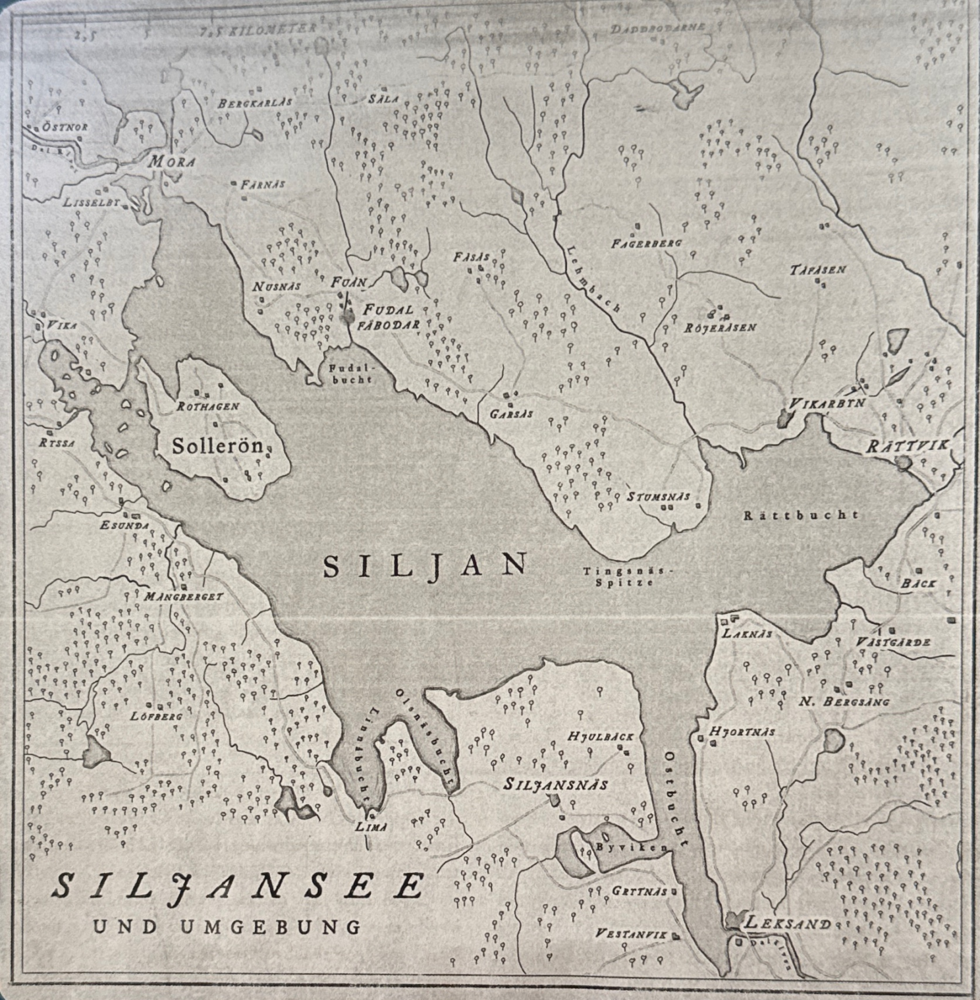

Protokoll
S04 - Reise nach Fudal
[outgame:: 31.05.2026] [ingame:: April/Mai]
==Frühling
To Dos: - Charaktere:
Szene 1 - Recherche Charlots
- Charlot
- Elfen. Angst vor Kirchenglocken, Stahl kann sie bannen, Mit Blasebalg Weihwasser über Elfenwege
- Mehrjungfrauen leben in Seen, wollen Geschenke. Ertrinken.
- Nöck. Wassermann. Hat etwas mit Musik zu tun. Mag Katzen. Soll man ihm opfern. Psychische Traumata. Besessenheit. Messer zum Bannen, mit dem die Saiten eines Instruments durchgeschnitten wurden.
- Seeschlange. Verletzungen wie von Löwen. Nimmt Kühe und Schweine. Man kann sie bannen, indem man sie dazu bringt, sich selbst in den Schwanz zu beißen.
- Irrlichter. Bei Wasser. Bekommen Traumata. Landkonflikte / Erbstreitigkeiten.
Szene 2 - Vorbereitungen
Szene 3 - Reise nach Fudal


- Sommeralm
- Die Kullas singen viel und spielen
- Vielleicht war es der Welz, oder anderes, Wälder (Sven Ortskunde)
- Ort Mora. Etwas landwirtschaftlich geprägt, Handwerker sitzen auf der Straße und rasten.
- Starker Frühling, heiß. Neuntöter, Dorngrasmücken, ...
- Sven fragt eine ältere Frau um dem Siljansee. Man kann im See baden gehen, aber man soll aufpassen und nicht zu weit schwimmen. Kühe sind die Menschen heilig hier.
- Jona fragt nach den traditionellen Holzpferden, ein Dalahäst. Frederic schnitzt sie. Jona eins als Geschenk gekauft. (ihre Vorbereitung)
- Charlot geht Techniken durch, wie man Leute wiederbelebt nach Ertrinken (seine Vorbereitung)
- Hilde sucht nach christlicher Kirche. Große Teppiche an der Wand. Heilige Margareta mit Kreuz gegen Seeschlange. Heiliger Johann gibt ein Geschenk an einen Elfen. Heiliger ... spricht einen Richtspruch bei einem Wegstein über 2 Bauern.
- Gasthaus
---
Szene 4 - Sverts Jenny
- Swärds Jenny stellt sich zuerst Charlot vor. Er hat polierte Schuhe als ehemaliger Soldat.
- Sie fragt, ob wir von der Gesellschaft sind.
- Swärds Jenny sitzt mit Charlot auf einem Bock, Hilde in der Kutsche von Swärds Jenny.
- Jona und Sven sind auf der anderen Kutsche.
- Wir fahren noch einen weiteren Tag.
- Swärds Jenny erzählt von ihrer Soldatenfamilie.
-
Szene 5 - Fulda
- Ankunft in Fulda.
- Ein Dutzend Kullas.
- Konrads Monika, Konrads Lisa führen uns rum, zeigen uns das eine Zimmer (nicht getrennt). Lockenköpfchen.
- Mädchen spielt ein Kuhhorn, singt verträumt
- Viel Käse und zwei Krüge Milch. Mattias Freja. Heute Abend großes Fest. Lisbets Boel' Geburtstag.
- Scheinbar wird die Person, die verschwunden ist, nicht vermisst, sondern die Kühe.
- Charlot würde gerne alle Menschen auf Schlafwandel untersuchen. Hilde will die Frauen zu einer Messe einladen, vor dem Fest. Wird aber von Swärds Jenny abgewürgt, es sei nicht passend.
- Sven hilft den Frauen bei den Vorbereitungen des Festes.
- Sven aus der Stadt und Kille, der Jagdhund, kommt gut an.
- Waldrand wird dicht, Weg zur Wiese, ein Teich.
- Jona geht am Bach entlang, um etwas zu finden. Am Osten des Baches sind keine Spuren. Kille will nicht zum See.
- Lisbets Boel. Aufgedreht, viel im Mittelpunkt. Charlot fragt sich, ob sie genug geschlafen hat.
- Pers Ida ist kindlich, aber ca. 19 Jahre alt. Singt und spielt.
Szene 6 - Das Fest beginnt
- Charlot untersucht die Mädchen optisch.
- Lisbets Boel hat wenig geschlafen. Redet wenig. Aufgedreht. Wird heute 22 Jahre. Jona ist 20 Jahre alt.
- Pers Ida ist verkratzt.
- Jona soll mit tanzen. Kann aber nicht tanzen. Sven auch nicht.
- Hilde wollte sich umgucken und beobachten, aber wurde wütend, weil sie ja im irrelevante Unterhaltung gefangen wurde.
- Jons Gustav wird später noch Geige spielen. Er spielt sehr viel besser als vor einem halben Jahr. Fanatisch spielt er. Ein Teufelsgeiger. Erzählt Konrads Monika über den Jons Gustav. Wohnt im Wald.
- Charlot trinkt Aquavit und beobachtet.
- Jons Gustav achtet viel auf die Boel.
Szene 7 - Gustav
- Jons Gustav spricht mit Charlot. Er ist Arzt. Wir haben eine Priesterin dabei und Leute, die sich um einen kümmern. Charlot nuschelt.
- Jons Gustav hat wenig von seinem Erbe bekommen.
- Sven lässt Jons Gustav gewinnen.
- Jona redet mit Jons Gustav über die Waldhütte.
- Jons Gustav fragt, wann wir wieder losfahren.
- Charlot sieht, dass Jons Gustav etwas von Lisbets Boel will. Spielt sie mit ihm? Sie fasst häufiger in ihre Rocktasche. Eher angespannte Situation.
- Hilde findet die Situation unheimlich. Insbesondere das Geigenspiel. Sie achtet auf Swärds Jenny. Sie ist beliebt, aber strenge Chefin. Sie ist angespannt.
Szene 8 - Monika
- Hilde beobachtet genauer. Die Pers Ida sitzt abseits. Die Mattias Freja ist um die Lisbets Boel herum. Freunde. Die Konrads Monika will noch mal mit Hilde reden.
- Konrads Monika mag den Jons Gustav. Die Pers Ida war weg und verkratzt. Die Lisbets Boel ist nachts schon mal raus.
- Kühe Bella und Betsy ertrunken. Davon leben wir doch.
- Sie findet es gut, dass jemand vom Glauben da ist.
- Manche Mädchen sagen, dass man Musik vom See her hört. Ein Geigenspiel. Aber Konrads Monika geht früh schlafen. Sie geht nach der Sommeralm immer beichten. Im großen Esssaal gab es einen Teppich, der einen Teufel gezeigt hat. Seit ein paar Wochen. Verschwunden als sie Pers Ida gefunden haben. Sie will noch 12 Rosenkränze beten.
Szene 9 - Boel
- Lisbets Boel fragt, warum wir denn da sind.
- Hilde erklärt, weil es schlimme Vorkommnisse gab. Wir sind Priester, Arzt, Jägerin und "Kindermädchen"
- Gott gefällt gutes Tagwerk.
Szene 10 - Planungen
- Wir erzählen von dem, was wir gesehen haben.
- Wir planen, die Nacht über aufzupassen.
- [0:30] Die Sonne geht in 4-5 h wieder auf.
---
Szene 11 - Die Nachtwache
Szene 12 - Ida
- Pers Ida spricht mit Sven
- Abends hat sie gesungen am See, sie hat danach sich zu ihrem Bett gelegt (sie hatte das Gefühl als hätte jemand ihr ein "dunklen Mantel übergeworfen", sie hat keine Erinnerung über die Nacht aber aufgewacht ist sie am See und sie wusste nicht, wie sie dahin gekommen ist.
- Eine Woche vor dem Schlafwandeln hatten sie die ertrunkene Kühen vorgefunden.
- An der Bucht mit der Seerose lagen sie dann. Ersoffen. Sagte der Tierarzt. Boel hatte den Zaun zu gemacht. Oder Freya.
- Am morgen war der Zaun zu. Man weiß nicht, wie die Kühen dahin gekommen sind.
- Den Konrads Monika und Konrads Lisa ist es aufgefallen, dass der Teppich über einen Teufel weg ist.
---
Szene 13 - Freya
- Hilde spricht mit Mattias Freja. Sie teilt sich eine Kammer mit Lisbets Boel.
- Sie kommen beide von hier. Aus Mora.
- Ist dir aufgefallen, dass die Lisbets Boel sehr aufgedreht war?
- Die Lisbets Boel ist wie immer. Aber sie sind gute Freunde.
- Mattias Freja hilft der Pers Ida bei den Tieren. Die Konrads Lisa und Konrads Monika und die Lisbets Boel sind am Käsen.
Szene 14 - Sverts Jenny
- Charlot schlägt eine körperliche Untersuchung vor
- Rudel 20-jähriger Mädchen anschauen
- Im Haus, wo wir untergebracht sind, können wir eine Routine-Untersuchung durchführen.
- Machen Sie den Mädchen bloß keine Angst!
- 6:30 am nächsten Morgen, nachdem Swärds Jenny mit allen abends gesprochen hat.
- Konrads Monika und Konrads Lisa sind am Wagenrad / Käsen.
Szene 15 - Von Religion zu Musik
- Hilde ist aufgefallen, dass sie hier gar nicht auf Religion achten. Sondern an Musik.
- Soll ich mal selber spielen?
- Charlot meint, erst einmal herauszufinden, ob das überhaupt ein Fall für die Gesellschaft ist.
- Hilde würde singen. Charlot soll sie beobachten.
Intermezzo
- Sven geht es gut, entspannt, nostalgisch, ein wenig müde, aber .
- Jona mag es, aus der Stadt raus zu sein, aber leicht übermüdet, leicht schlechte Vorahnung. Wäre schön gewesen, einfach mitzutanzen. War aber klar, dass sie da nicht reinpasst. Leichter Neid. Trotz. Die wissen ja nichts. Belächelnd.
- Charlot ...
- Hilde ...
Szene 16 - Spuren im Wald
- Sven und Jona untersuchen die Spuren am Waldrand.
- Führen die Spuren Richtung Wald oder zum Dorf / Wiese
- Kille
- Große schwarze Kralle. Braunes, filziges Fell. Großer Braunbär!!
- Hinter dem Braunbären zwei Jungen.
- 5-6m Distanz.
- Wir weichen langsam zurück. Machen uns groß und schauen dem Bären nicht in die Augen.
- Geschafft.
Szene 17 - Teuflisches Musikspiel
- Charlot und Hilde suchen, wo Lisbets Boel Käse macht
- Konrads Monika, Konrads Lisa und Lisbets Boel
- Charlot schaut sich die Sauberkeit an. Keine Sauberkeitsbedingungen. Milch wird nicht pasteurisiert. Nichts Bedenkliches.
- Die Konrads Lisa freut sich und hört auf. Die Musik wird immer wilder.
- Ein Topf fällt im Takt herunter.
- Es wird immer lauter und intensiver. Die Mädchen sind im Takt.
- Sind die Mädchen in Trance?
- Ja! Spiel mir das Lied vom Teufel! Die Lisbets Boel ist nicht im Takt.
- Das war übernatürlich. Beide haben den Furchtwurf geschafft.
- Hilde kam das nicht christlich vor.
Szene 18 - Planungen
Szene 19 - Auf der Weide
- Sven redet mit Pers Ida auf der Weide und bittet sie, uns zum See zu bringen.
- Mattias Freja passt weiter auf.
Szene 20 - Am See
- Charlot schaut sich die Wunden an. Schürfwunde, Kratzer, angedeutete Würgemale?
- Da mache ich Musik, da sind die Kühe gewesen, da schaut sie die Natur an. Manchmal ehren wir die Natur nicht genug.
- Da treibt etwas im Wasser. Zwischen den Seerosen. Ein Kuvert (Briefumschlag)
- Sven holt den Briefumschlag aus dem Wasser. Liebesbrief von Jons Gustav.
- Durchnässt, gefroren. Auch die Haare.
- Man soll nicht weit ins Wasser gehen. Wegen dem Wels. Schaut sich gern die Libellen an. Sie ist
- Sven
Szene 21 - Der Liebesbrief
- Ich weiß, dass dein Herz für einen anderen Geiger schlägt.
- Irgendwann bin ich mal so ein guter Geiger, dass wir zusammen
- Jons Gustav
- Sven vermutet, dass der Brief von Lisbets Boel ins Wasser warf
- Charlot sagt, Lisbets Boel kennt vielleicht alleine den anderen Geiger
- Sven vermutet, dass Jons Gustav die Kühe geopfert hat, um besser als Geiger zu werden
- Hilde stoppt die Diskussion und sagt, wir drehen uns im Kreis. Sie will hier spielen.
Szene 22 - Das Musikspiel am See
- Wir sind 20m vom Wasser weg und Hilde spielt Musik. [2 Erfolge]
- In der Ferne auf dem See sieht man Kringel auf dem
- Sie fühlt sich bewertet.
- Hilde will gehen.
- Jona wirft das Holzpferd in den See, aber nur eine kleine Geste.
- Wenn den Frauen die Kühe so wichtig sind, dann wäre das ein gutes Geschenk. Aber das wäre es nicht für Jons Gustav.
- Sven schneidet direkt am See die Saiten der Mandoline von Hilde durch und warnt den See, dass er das tun würde.
- Jona schießt über den See.
Szene 23 - Freya
- Mattias Freja ist angerannt gekommen.
- Katze ist auch weg. Vor einem Monat weg. Schwarzer Kater.
- Lisbets Boel hat Schlafstörungen.
- Wir haben gehört, es gibt noch einen Geiger...
- Es geht Mattias Freja näher als eine Freundschaft. Lisbets Boel sagt, es gibt einen anderen Geiger. Nicklas soll ein guter Geiger sein. Sie weiß nicht,
Szene 24 - Jenny
- Jons Gustav hat von einem Bären gesprochen. Er hat schon Bärenfallen
- Swärds Jenny sagt, man soll den Bären töten, bevor er Junge legt.
- Alter Wandteppich. Auch Swärds Jenny weiß nicht, was auf dem Teppich gewesen ist.
- Charlot: Vielleicht hat er gar keinen Hof.
- Was ist denn mit der Lisbets Boel? Wird auch schon flügge.
Szene 25 - Der Zettel auf dem Bett
- Viele Bremsen.
- Mattias Freja und Pers Ida sitzen
- Sven schlägt vor, so zu tun, dass wir etwas am See geschossen haben.
- Charlot: Man kann dem Nöck eine Katze opfern, um eine Melodie zu erhalten.
- Sven: Also hat Jons Gustav die Katze geopfert, vielleicht mehrere.
- Sven findet einen Zettel auf dem Bett: "Aufdringliche Leute wie ihr sollten besser gehen. Lasst uns das selbst regeln."
Szene 26 - Im Esssaal
- Swärds Jenny: Und da hing der Teppich.
- Mattias Freja merkt, dass sie darüber reden und beobachtet das stark.
- Sven: "Hoffentlich machen sie nicht viel aus dem Schuss. Keiner soll das Vaesen finden." (so dass Lisbets Boel das hört.)
- Lisbets Boel verliert vollkommen die Fassung.
- Sie geht raus. Wir gehen ihr hinterher.
Szene 27 - Wahrheit von Boel
- Lisbets Boel hat Tränen in den Augen um eine Ecke.
- Hilde hinterher.
- Was wollt ihr ihr denn erzählen?
- Nicklas
- Kommt morgen Abend. Zum Weideeingang. Ich stell euch ihm vor: Nicklas.
- Sven lässt sie gehen.
- Hilde: Wie wird Mattias Freja darüber denken? Sie passt auf Lisbets Boel auf. Nicht wie eine große Schwester. Und Mattias Freja hat ihre Katze verloren...
- Wir sollten die Hütte der beiden beobachten. Heute Nacht.